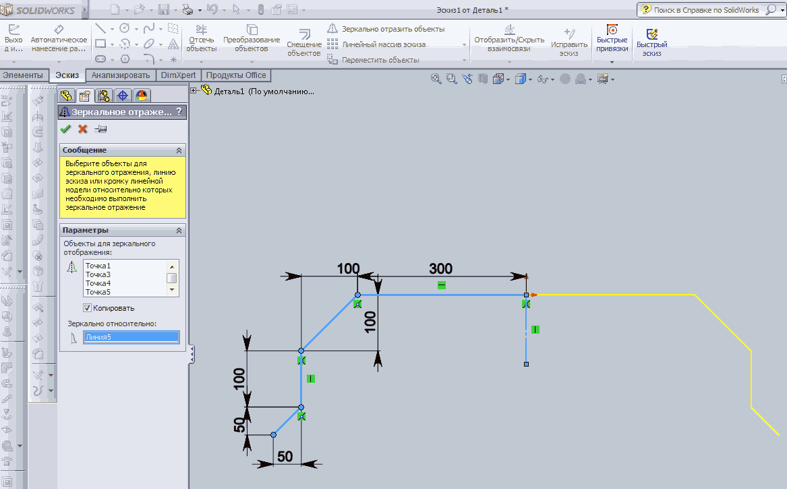
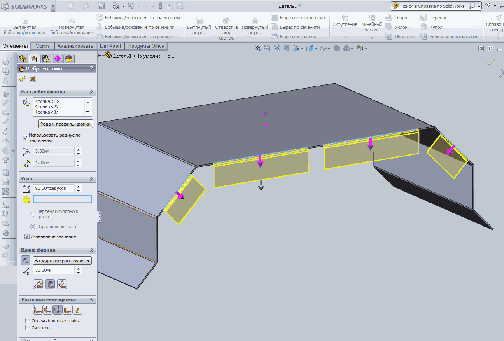
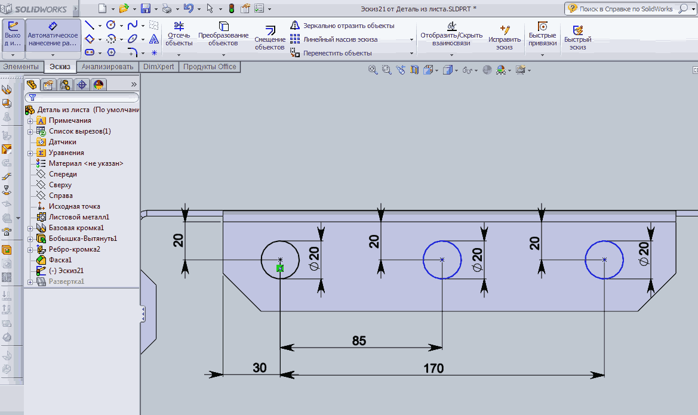
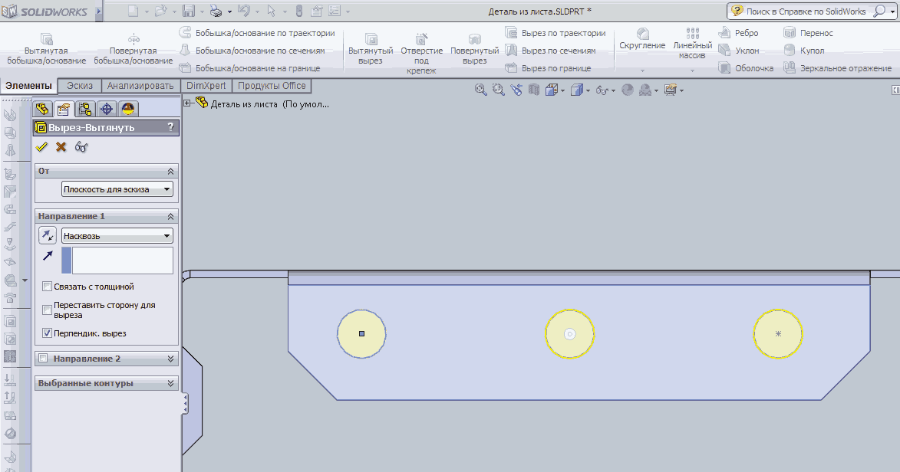

Затем воспользуемся командой Зеркально отобразить объекты.

Если у вас не открыто меню Листовой материал, то откройте его через
Настройки и выберите команду Базовая кромка.
Укажите длину выталкивания по 200мм в обе стороны, толщину и радиус гибки по 3мм.
Создайте новый эскиз на торцовой кромке детали и постройте два прямоугольника с одной стороны детали.
Для построения прямоугольников используйте команды Угловой прямоугольник и
Угловой прямоугольник по 3 точкам(для наклонного прямоугольника) меню Эскиз.
Укажите размеры и с помощью команды Зеркально отобразить объекты повторите прямоугольники на другой стороне.
Воспользовавшись командой Вытянутая бобышка/основание выдавите созданный эскиз на 1мм.
Для создания отогнутых фланцев на детали активизируйте команду Ребро - кромка меню Листовой материал.
Выберите кромки, длину фланцев укажите равной 50мм, при необходимости щёлкните по стрелке реверса для изменения направления.

Выполним фаски на фланцах.
Зайдите в команду Скругление и в раскрывающемся списке выберите Фаска. Укажите все кромки для снятия фаски и её размер (20мм).
Создайте эскиз на фланце для выполнения трёх отверстий на нём.
Нарисуйте три окружности диаметром 20мм и укажите все необходимые размеры.

С помощью команды Вытянутый вырез выполните отвертия.

Для копирования отверстий на симметричный фланец воспользуемся командой
Зеркальное отражение.
В качесве плоскости симметрии выберем плоскость Спереди в дереве модели...
...а в качестве скопированных элементов выберем Вырез - вытянуть в дереве модели.
Теперь отзеркалим все фланцы вместе с отверстиями и фасками на другую сторону детали.
В качесве плоскости симметрии выберем плоскость Справа в дереве модели...
...а в качестве скопированных элементов выберем все фланцы вместе с отверстиями и фасками в в дереве модели.
Для построения развёртки детали воспользуйтесь командой Развёртка
меню Листовой материал.
Для возвращения модели в исходное состояние опять щёлкните по команде Развёртка.
Готовая 3D — модель детали из листового материала.